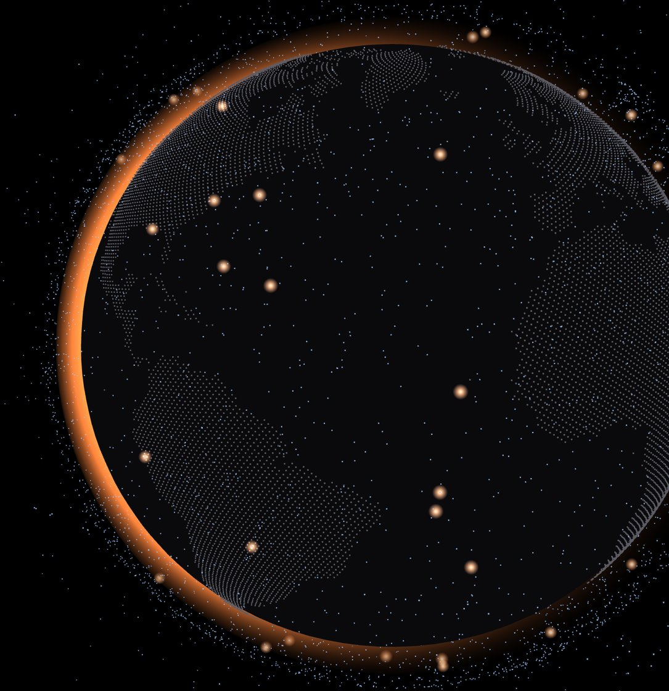

● Live01
GIS × Orbital Mechanics × Space Policy
Fallen
A live globe of everything coming back from orbit: where each re-entering satellite or rocket body can fall during its prediction window, who lives under that path, which country is liable under the UN Liability Convention, and what has actually been found on the ground.
- Original finding: high-income countries hold 43% of recorded debris finds but only 12% of the exposure. China has 0 against ~13 expected
- 10,000+ satellites propagated with SGP4 in the browser on a CesiumJS globe lit by the real sun
- GHS-POP population within 50 km of every path, updated automatically by GitHub Actions, with each forecast scored once the object comes down
SGP4CesiumJSGHS-POPPythonGitHub ActionsStatistics